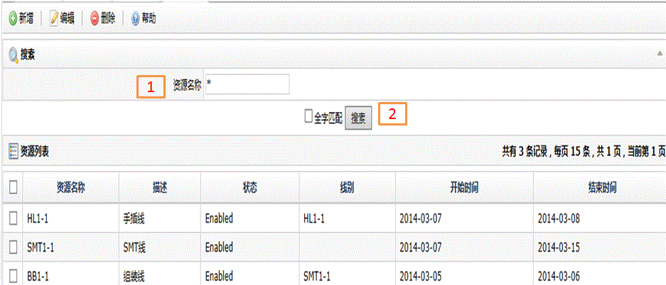
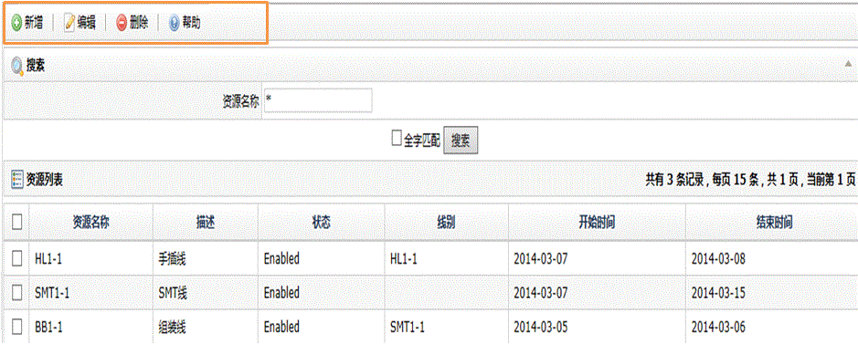
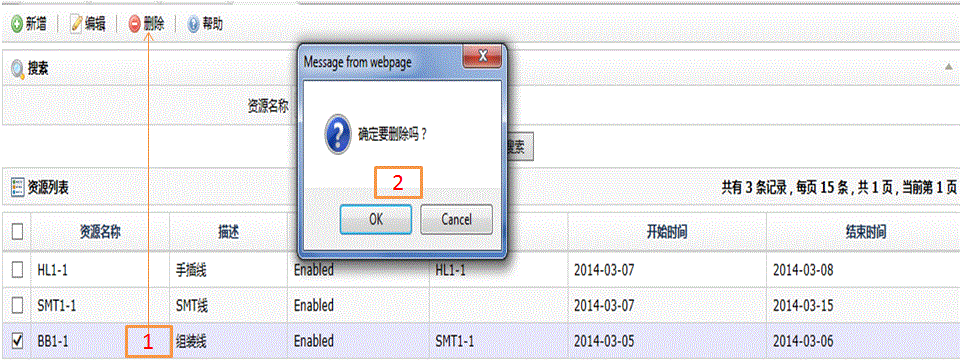

| 字段名 | 描述 |
| 资源名称 | 资源的名称 |
| 状态 | Enabled:有效可用状态； Disabled：不可用状态； Hold:暂停状态，问题修复后可改为可用状态； Scheduled Down：计划维护状态，资源不可用； Unscheduled Down:非计划性维护状态，资源不可用； Non-Scheduled:非计划状态，资源不可用； Hold Consec NC: 系统保留状态，资源不可用； Hold SPC Viol:系统保留状态，资源不可用； Hold SPC Warn:系统保留状态，资源不可用； Hold Yield Rate:资源生产效率低于设定值，资源不可用； Unknown:未知原因，资源不可用； Productive:决定使用效率状态，资源可用； Standby:当前空闲状态，资源可用； Engineering:工程状态，资源可用。表示资源用于工程 |
| 描述 | 资源的说明 |
| 线别 | 资源归属的线别 |
| 开始时间 | 资源可以使用的开始日期 |
| 结束时间 | 资源可以使用的最后日期 |


